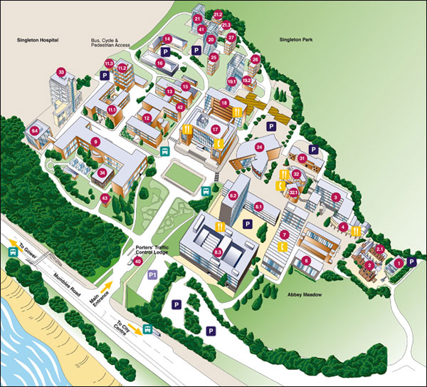
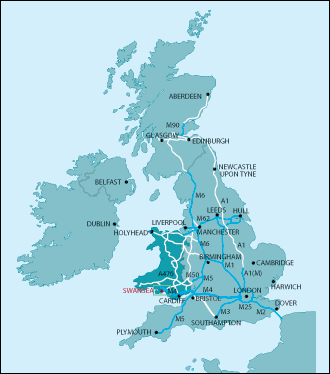

Venue
Swansea University
Department of Computer Science
Robert Recorde Room
(2nd floor,
Faraday Building
)
Information about the location can be found
here
The Faraday Building is 8.1 on the following map

